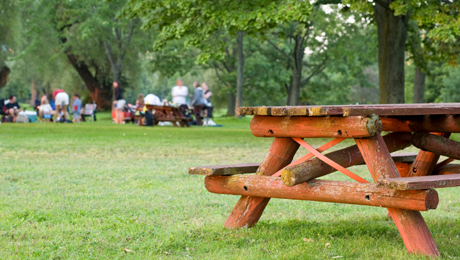

LOST FOREST
The Lost Forest is a quiet and magical part of the zoo where you can escape the crowds and connect with nature. It is a large, beautiful forest area with a peaceful lake, tall trees, and picnic spots everywhere. Families love to bring blankets and enjoy lunch while listening to birds chirping and leaves rustling.
There are small paths that lead you through the trees where you might spot squirrels, colourful birds and even small buck that live freely here. It is also a great place to relax after walking around the whole zoo, with benches and shade to rest your feet.
If you need a break from the busy animal enclosures, the Lost Forest is the perfect place to slow down and enjoy the natural beauty of Pine City Zoo.
WHERE WILL YOU FIND IT
The Lost Forest is to the south of the zoo, near the monkey trail and insect house.